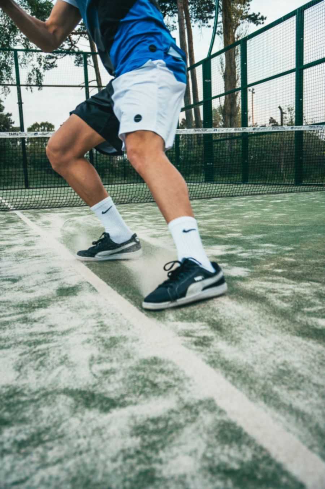

NHLでノルウェー選手がゴールラッシュ — ソルベルグとズッカレッロが得点Norsk målfest i NHL – Solberg og Zuccarello med scoringerスティアン・ソルベルグは、アナハイム・ダックス対ロサンゼルス・キングス戦で試合最初のゴールを決め、NHL初ゴールを記録した。その直後に2点目も生まれた。
NHLでノルウェー選手がゴールラッシュ — ソルベルグとズッカレッロが得点Norsk målfest i NHL – Solberg og Zuccarello med scoringerスティアン・ソルベルグは、アナハイム・ダックス対ロサンゼルス・キングス戦で試合最初のゴールを決め、NHL初ゴールを記録した。その直後に2点目も生まれた。 スティアン・ソルベルグ、NHLで初の2ゴール ― その後ズッカが応戦Stian Solberg med sine to første mål i NHL - så svarte Zuccaスティアン・ソルベルグは、アナハイム・ダックス対ロサンゼルス・キングス戦の第1ピリオドで大活躍した。
スティアン・ソルベルグ、NHLで初の2ゴール ― その後ズッカが応戦Stian Solberg med sine to første mål i NHL - så svarte Zuccaスティアン・ソルベルグは、アナハイム・ダックス対ロサンゼルス・キングス戦の第1ピリオドで大活躍した。 チェルシー3連敗 ― フォレストの見事な一撃がロンドンのチームを沈めるTre strake nederlag for Chelsea – Forest-perle senket London-lagetチェルシーは2点を挙げたが、金曜日のプレミアリーグでアウェーのノッティンガム・フォレストに2-3で敗れた試合では一度もリードしなかった…
チェルシー3連敗 ― フォレストの見事な一撃がロンドンのチームを沈めるTre strake nederlag for Chelsea – Forest-perle senket London-lagetチェルシーは2点を挙げたが、金曜日のプレミアリーグでアウェーのノッティンガム・フォレストに2-3で敗れた試合では一度もリードしなかった… チェルシーの新たな痛手 — 直近5試合で4敗目Ny Chelsea-smell – fjerde tapet på de siste fem ligakampeneシャビ・アロンソ率いるチームは苦戦が続いている。金曜夜、アウェーでノッティンガム・フォレストに3-2で敗れた。この敗戦により、チェルシーは直近5試合で4敗目となった。
チェルシーの新たな痛手 — 直近5試合で4敗目Ny Chelsea-smell – fjerde tapet på de siste fem ligakampeneシャビ・アロンソ率いるチームは苦戦が続いている。金曜夜、アウェーでノッティンガム・フォレストに3-2で敗れた。この敗戦により、チェルシーは直近5試合で4敗目となった。 セルヴィクが再びすべてを止めた：「今は無敵だ！」Selvik reddet alt igjen: - Uslåelig i øyeblikket!
セルヴィクが再びすべてを止めた：「今は無敵だ！」Selvik reddet alt igjen: - Uslåelig i øyeblikket! ローゲンダール博物館近くの納屋で火災Brann i låve ved Lågendalsmuseet延焼の恐れのため、住宅3軒で避難が行われた。
ローゲンダール博物館近くの納屋で火災Brann i låve ved Lågendalsmuseet延焼の恐れのため、住宅3軒で避難が行われた。 バレンシアでのマラソン：―涙と悪態Maraton i Valencia: – Tårer og bannskap昨年、オップダル出身の仲間たちはバレンシア・マラソンでそれぞれ手痛い挫折を味わった。今度は雪辱を果たそうとしている。
バレンシアでのマラソン：―涙と悪態Maraton i Valencia: – Tårer og bannskap昨年、オップダル出身の仲間たちはバレンシア・マラソンでそれぞれ手痛い挫折を味わった。今度は雪辱を果たそうとしている。 ロニー・デイラがスパルタ・プラハの監督に就任Ronny Deila tar over Sparta Prahaロニー・デイラが監督に復帰し、チェコのサッカークラブ、スパルタ・プラハの指揮を執ることになったと、クラブがメディアチャンネルで発表した。デイラは…
ロニー・デイラがスパルタ・プラハの監督に就任Ronny Deila tar over Sparta Prahaロニー・デイラが監督に復帰し、チェコのサッカークラブ、スパルタ・プラハの指揮を執ることになったと、クラブがメディアチャンネルで発表した。デイラは… ロニー・デイラ氏がスパルタ・プラハの監督に就任Ronny Deila tar over Sparta Prahaロニー・デイラ氏はイスラエルでの騒動の後、監督の座に復帰する。
ロニー・デイラ氏がスパルタ・プラハの監督に就任Ronny Deila tar over Sparta Prahaロニー・デイラ氏はイスラエルでの騒動の後、監督の座に復帰する。 ヘスス、チェルシー戦でノッティンガム・フォレストに鮮やかなボレーを決めるJesus med volley-perle for Nottingham Forest mot Chelsea
ヘスス、チェルシー戦でノッティンガム・フォレストに鮮やかなボレーを決めるJesus med volley-perle for Nottingham Forest mot Chelsea PSTがエルフ警官を募集：「多くの応募者が集まっている」PST søker alvebetjenter: – Vi får mange søkere新たなエルフ警官24人が南極圏の関係者と戦うことになる。PSTは手厚い特典で引きつけている。
PSTがエルフ警官を募集：「多くの応募者が集まっている」PST søker alvebetjenter: – Vi får mange søkere新たなエルフ警官24人が南極圏の関係者と戦うことになる。PSTは手厚い特典で引きつけている。 警察が彼のオフィスでワニを発見。「それは略奪だ」Politiet fant en krokodille på kontoret hans. – Det er plyndring.スキャンダルは、ウクライナのドニプロでの奇妙なワニの発見から始まった。今ではウクライナ政府の最上層にまで及んでいる。
警察が彼のオフィスでワニを発見。「それは略奪だ」Politiet fant en krokodille på kontoret hans. – Det er plyndring.スキャンダルは、ウクライナのドニプロでの奇妙なワニの発見から始まった。今ではウクライナ政府の最上層にまで及んでいる。 ストルテンベルグ氏が批判に反論――「減税の大部分は維持される」Stoltenberg svarer på kritikken: – Det meste av skattekuttet består来年のあなたの税金はこうなる（MDGが予算を支持する場合）：――人々の家計に余裕ができる。
ストルテンベルグ氏が批判に反論――「減税の大部分は維持される」Stoltenberg svarer på kritikken: – Det meste av skattekuttet består来年のあなたの税金はこうなる（MDGが予算を支持する場合）：――人々の家計に余裕ができる。 帰ってきたKOM HJEM祖母が崩れ落ちる。孫が帰ってきた。担架の上で、餓死して…
帰ってきたKOM HJEM祖母が崩れ落ちる。孫が帰ってきた。担架の上で、餓死して… プーチン氏が新型原子力潜水艦を公開Putin avduket ny atomubåtロシアのウラジーミル・プーチン大統領は金曜日、新型の原子力潜水艦を公開し、公開された映像によると、ロシアは2030年までにさらに5隻を艦隊に加えると述べた
プーチン氏が新型原子力潜水艦を公開Putin avduket ny atomubåtロシアのウラジーミル・プーチン大統領は金曜日、新型の原子力潜水艦を公開し、公開された映像によると、ロシアは2030年までにさらに5隻を艦隊に加えると述べた ノーマル、モンスターの6種類をリコールNormal tilbakekaller seks Monster-varianter缶には、ノルウェーのエナジードリンクでは認められていない物質が含まれている。
ノーマル、モンスターの6種類をリコールNormal tilbakekaller seks Monster-varianter缶には、ノルウェーのエナジードリンクでは認められていない物質が含まれている。 Monsterエナジードリンクの6種が新たに回収Seks nye Monster-energidrikker tilbakekallesNormalは、ノルウェー国内の全店舗からエナジードリンクMonsterの6種類を回収している。
Monsterエナジードリンクの6種が新たに回収Seks nye Monster-energidrikker tilbakekallesNormalは、ノルウェー国内の全店舗からエナジードリンクMonsterの6種類を回収している。 Monster Energyの回収が拡大：Normalが6種類を回収Tilbakekalling av Monster Energy utvides: Normal tilbakekaller seks varianterNormal ASは、ノルウェー国内の全店舗からMonster Energy（500ml）6種類を回収している。その理由は、缶にL-カルニチン-L-酒石酸塩という物質が含まれているためだ
Monster Energyの回収が拡大：Normalが6種類を回収Tilbakekalling av Monster Energy utvides: Normal tilbakekaller seks varianterNormal ASは、ノルウェー国内の全店舗からMonster Energy（500ml）6種類を回収している。その理由は、缶にL-カルニチン-L-酒石酸塩という物質が含まれているためだ 父親がその冒険を始めた――今、それが終わりを迎えるかもしれないFaren startet eventyret – nå kan det ta sluttスヴェイン・バッケは1976年、ソグンダルをノルウェーのトップサッカーへと導いた立役者の1人だった。
父親がその冒険を始めた――今、それが終わりを迎えるかもしれないFaren startet eventyret – nå kan det ta sluttスヴェイン・バッケは1976年、ソグンダルをノルウェーのトップサッカーへと導いた立役者の1人だった。 税務当局が裁判で勝利：売春に対して税金を請求できるSkatteetaten vant rettssak: Kan kreve skatt for prostitusjonその女性は、マッサージ事業からの収入が上方修正されることには同意したが、…については拒否した
税務当局が裁判で勝利：売春に対して税金を請求できるSkatteetaten vant rettssak: Kan kreve skatt for prostitusjonその女性は、マッサージ事業からの収入が上方修正されることには同意したが、…については拒否した 気象学者が週末の滑りやすい道路について警告Meteorologen advarer mot glatte veier i helgen「状況に合わせて運転してください」と気象学者は言う。
気象学者が週末の滑りやすい道路について警告Meteorologen advarer mot glatte veier i helgen「状況に合わせて運転してください」と気象学者は言う。 ノースの破産管財人：――私たちの前には大量の仕事があるBostyrer om Norse: – Masse arbeid foran oss破産した航空会社ノースには60億クローネを超える負債がある。
ノースの破産管財人：――私たちの前には大量の仕事があるBostyrer om Norse: – Masse arbeid foran oss破産した航空会社ノースには60億クローネを超える負債がある。 Spotifyで今年最も再生された楽曲Årets mest spilte låter på Spotifyノルウェーにおける2026年最大の海外ヒットは、11年前の曲だ。しかし、リストの最上位にあるのはノルウェーの…
Spotifyで今年最も再生された楽曲Årets mest spilte låter på Spotifyノルウェーにおける2026年最大の海外ヒットは、11年前の曲だ。しかし、リストの最上位にあるのはノルウェーの… 妊娠中のハンナ＝マルティーネ、スペクトラムでのショーを計画Gravid Hanna-Martine planlegger Spektrum-showまずは出産と授乳を間に合わせなければならず、同時にポッドキャストデュオは経済的なリスクを負っている。
妊娠中のハンナ＝マルティーネ、スペクトラムでのショーを計画Gravid Hanna-Martine planlegger Spektrum-showまずは出産と授乳を間に合わせなければならず、同時にポッドキャストデュオは経済的なリスクを負っている。 ビョルナフィヨルデンで男性が死亡して発見されるMann funnet omkommet i Bjørnafjorden男性1人が、ビョルナフィヨルデンのステインダルス湖で死亡して発見された。
ビョルナフィヨルデンで男性が死亡して発見されるMann funnet omkommet i Bjørnafjorden男性1人が、ビョルナフィヨルデンのステインダルス湖で死亡して発見された。 政府：物議を醸す実業家、ノルウェーの鉱山を購入できることにRegjeringen: Omstridt forretningsmann får kjøpe gruver i Norge鉱山所有者には、安全保障法に基づく届出義務が課される。
政府：物議を醸す実業家、ノルウェーの鉱山を購入できることにRegjeringen: Omstridt forretningsmann får kjøpe gruver i Norge鉱山所有者には、安全保障法に基づく届出義務が課される。 リンドヴィク、ルカ予選でトップLindvik best i Ruka-kvalikマリウス・リンドヴィクは金曜夜、ルカでの予選を制し、ジャンプ台におけるノルウェーの好調を維持した。142.5メートルの飛躍で、全選手の中でトップだった…
リンドヴィク、ルカ予選でトップLindvik best i Ruka-kvalikマリウス・リンドヴィクは金曜夜、ルカでの予選を制し、ジャンプ台におけるノルウェーの好調を維持した。142.5メートルの飛躍で、全選手の中でトップだった… 米国がオマーン湾で商船を「無力化」――イランは報復を誓うUSA har «uskadeliggjort» handelsskip i Omanbukta – Iran lover hevn木曜日にイランのバンダルアッバス港から出航しようとした商船が…
米国がオマーン湾で商船を「無力化」――イランは報復を誓うUSA har «uskadeliggjort» handelsskip i Omanbukta – Iran lover hevn木曜日にイランのバンダルアッバス港から出航しようとした商船が… ジョー・バイデンの回顧録、前任者たちよりはるかに売れ行き不振Joe Bidens memoarbok selger langt dårligere enn hans forgjengeres元米大統領ジョー・バイデンの著書『Promise Me, America』は約21売れた。
ジョー・バイデンの回顧録、前任者たちよりはるかに売れ行き不振Joe Bidens memoarbok selger langt dårligere enn hans forgjengeres元米大統領ジョー・バイデンの著書『Promise Me, America』は約21売れた。 2000年以降、麻疹による死亡が90％以上減少――しかしワクチン拒否に懸念Over 90 prosent færre meslingdødsfall siden 2000 – men vaksinenekt bekymrer世界では過去25年間で、麻疹による死亡者数が劇的に減少している。
2000年以降、麻疹による死亡が90％以上減少――しかしワクチン拒否に懸念Over 90 prosent færre meslingdødsfall siden 2000 – men vaksinenekt bekymrer世界では過去25年間で、麻疹による死亡者数が劇的に減少している。 エッゲルトさん（41）と「アッディ」さん（59）が死亡：「私の父はタフな人だった」Eggert (41) og «Addi» (59) døde: – Pappaen min var en tøffingアイスランド沖での劇的な事故で3人が命を落とした。今、家族が亡くなった2人について言葉を寄せている。
エッゲルトさん（41）と「アッディ」さん（59）が死亡：「私の父はタフな人だった」Eggert (41) og «Addi» (59) døde: – Pappaen min var en tøffingアイスランド沖での劇的な事故で3人が命を落とした。今、家族が亡くなった2人について言葉を寄せている。 18歳の若者は攻撃に及ぶ前、長期間ChatGPTとチャットしていた。AI企業にはどのような責任があったのか？18-åringen chattet med ChatGPT i lang tid før hen gikk til angrep. Hvilket ansvar hadde KI-selskapet?カナダのティンブラー・リッジ校での学校銃撃事件で8人が死亡した。
18歳の若者は攻撃に及ぶ前、長期間ChatGPTとチャットしていた。AI企業にはどのような責任があったのか？18-åringen chattet med ChatGPT i lang tid før hen gikk til angrep. Hvilket ansvar hadde KI-selskapet?カナダのティンブラー・リッジ校での学校銃撃事件で8人が死亡した。 コンティオラハティでノルウェー勢の力強い射撃：―「本当にすごい」Sterk norsk skyting i Kontiolahti: – Helt viltマルテ・クロークスタッド・ヨハンセンは20発全弾命中を決めた。トップにはノルウェー選手が多数並んだ…
コンティオラハティでノルウェー勢の力強い射撃：―「本当にすごい」Sterk norsk skyting i Kontiolahti: – Helt viltマルテ・クロークスタッド・ヨハンセンは20発全弾命中を決めた。トップにはノルウェー選手が多数並んだ… フィンランドで素晴らしい射撃にもかかわらずノルウェー勢は表彰台なし ― エルビラ・オーベリがワールドカップ開幕戦を制すIngen norske på pallen i Finland tross kjempeskyting – Elvira Öberg vant verdenscupåpningenフィンランドでのワールドカップ開幕戦で、ノルウェーの女子バイアスロン選手たちが素晴らしいチームとしての活躍を見せたにもかかわらず、15km個人では表彰台に届かなかった。
フィンランドで素晴らしい射撃にもかかわらずノルウェー勢は表彰台なし ― エルビラ・オーベリがワールドカップ開幕戦を制すIngen norske på pallen i Finland tross kjempeskyting – Elvira Öberg vant verdenscupåpningenフィンランドでのワールドカップ開幕戦で、ノルウェーの女子バイアスロン選手たちが素晴らしいチームとしての活躍を見せたにもかかわらず、15km個人では表彰台に届かなかった。 ケニアのカルト指導者、さらに123件の殺人で有罪Kenyansk sektleder skyldig i ytterligere 123 drapカルト指導者ポール・マッケンジーは、有罪判決を受けてから数週間後に、さらに123件の殺人で有罪と認められた…
ケニアのカルト指導者、さらに123件の殺人で有罪Kenyansk sektleder skyldig i ytterligere 123 drapカルト指導者ポール・マッケンジーは、有罪判決を受けてから数週間後に、さらに123件の殺人で有罪と認められた… ノルディック複合でノルウェー勢が上位3位を独占Trippel norsk i kombinertエイナル・ルロース・オフテブロが優勝し、ルカでのノルディック複合はノルウェー勢が上位3位を独占した。兄弟のイェンスが2位、カスペル・モーエン・フラトラが3位だった。ヴィンツェンツ・ガイガーはノルウェー人以外では最高の…
ノルディック複合でノルウェー勢が上位3位を独占Trippel norsk i kombinertエイナル・ルロース・オフテブロが優勝し、ルカでのノルディック複合はノルウェー勢が上位3位を独占した。兄弟のイェンスが2位、カスペル・モーエン・フラトラが3位だった。ヴィンツェンツ・ガイガーはノルウェー人以外では最高の… 監督：――アーリングは動揺しているManager: – Erling er opprørtマンチェスター・シティの指揮官エンツォ・マレスカは、エルリング・ブラウト・ハーランドがチームがサッカーの試合に勝てないことに「動揺している」と断言する。この発言は記者会見で
監督：――アーリングは動揺しているManager: – Erling er opprørtマンチェスター・シティの指揮官エンツォ・マレスカは、エルリング・ブラウト・ハーランドがチームがサッカーの試合に勝てないことに「動揺している」と断言する。この発言は記者会見で RBK、アレクサンダーソン監督をメディアから遠ざけるRBK skjermer Alexanderssonローゼンボリのフレイル・アレクサンダーソン監督は、週末のモルデとの大一番を前にメディア対応を免除される。クラブの広報担当ヨルゲン・ステンセス氏が地元紙ニダロスに明らかにした
RBK、アレクサンダーソン監督をメディアから遠ざけるRBK skjermer Alexanderssonローゼンボリのフレイル・アレクサンダーソン監督は、週末のモルデとの大一番を前にメディア対応を免除される。クラブの広報担当ヨルゲン・ステンセス氏が地元紙ニダロスに明らかにした ノルウェーの伏兵がノルディック複合でトップにNorsk overraskelse best i kombinertカスペル・モーエン・フラトラ（27歳）は142メートルを飛び、ルカで行われるノルディック複合でジャンプを終えて首位に立った。15時30分から7.5kmのクロスカントリーが行われる（NRKラジオとViaplay）。A兄弟
ノルウェーの伏兵がノルディック複合でトップにNorsk overraskelse best i kombinertカスペル・モーエン・フラトラ（27歳）は142メートルを飛び、ルカで行われるノルディック複合でジャンプを終えて首位に立った。15時30分から7.5kmのクロスカントリーが行われる（NRKラジオとViaplay）。A兄弟
ヴィクトリア・カール、ドーピングによる出場停止後の復帰戦となったゴーローでライバルたちを圧倒Victoria Carl knuste konkurrentene på Gålå i comebacket etter dopingutestengelseドイツのクロスカントリースキー選手ヴィクトリア・カールは、18か月間のドーピングによる出場停止後、最初のレースで力強さを見せた。金曜日にゴーローで行われたノルゲスカップのレースでは、10キロメートル← トップページへ戻る